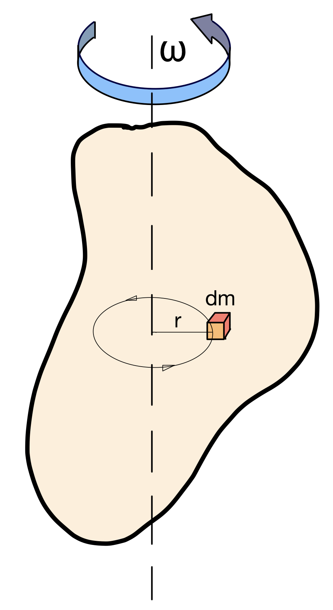
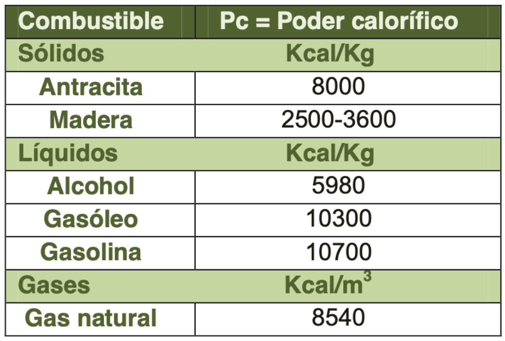

La Ciencia no dispone aún de una definición completa de la energía. Conocemos sus manifestaciones y sus efectos: la realización de trabajo, la variación de temperatura, cambios de estado, etc. La definición más aproximada sería:
Energía es la capacidad para realizar un trabajo y/o intercambiar calor
La energía puede manifestarse en el mundo macroscópico de diversas formas y es necesario conocer, aunque sea a nivel básico, cómo calcular la energía involucrada en algún fenómeno. Dependiendo de la manifestación o el tipo de la energía, tendremos diferentes expresiones para calcular la cantidad de energía "almacenada" en algún cuerpo o la cantidad de trabajo que se realiza cuando se libera (se pone en acción) esa energía.
La energía se manifiesta de múltiples formas, pudiendo convertirse unas formas en otras. Vamos a ver las más importantes desde el punto de vista del funcionamiento de las máquinas.
Energía MECÁNICA
Es la energía que se debe a la posición, al movimiento o alestado de tensión interno de un cuerpo.
Por lo tanto, es la suma de las energías potencial (gravitatoria y elástica) y cinética de un sistema mecánico. Expresa la capacidad que poseen los cuerpos con masa de efectuar un trabajo.
Energía cinética de traslación
Es la energía que posee un cuerpo por el hecho de estar en movimiento.
La energía cinética de un cuerpo de masa m que se traslada con una velocidad v viene dada por la expresión:
\[E_{C}=\frac{1}{2}\cdot m\cdot v^{2} \ \ \ donde \left\{\begin{array}{ll} m: masa \ (kg)\\ v: velocidad \ (m/s) \end{array}\right.\]
Teorema de la energía cinética (o de las fuerzas vivas)
Si sobre un cuerpo de masa m actúa una fuerza que realiza un trabajo W y, como consecuencia, la velocidad del cuerpo pasa de un valor inicial v1 a un valor final v2, se cumple:
Es decir el trabajo se emplea en aumentar la energía cinética del cuerpo.
Nota: según la expresión anterior, si el cuerpo disminuye su velocidad el trabajo sale con signo negativo, lo que indica que es realizado por el propio cuerpo.
Energía cinética de rotación

Si un cuerpo posee un movimiento de rotación en torno a un eje con velocidad angular ω, podemos considerarlo formado por una infinidad de partículas minúsculas, cada una con una masa dm, todas girando a la misma velocidad angular ω (si el cuerpo es rígido).
Si una de estas partículas está a una distancia r del eje de giro (cada partícula estará a una distancia r propia), su velocidad será v = ω · r. Por tanto, la energía cinética de esta partícula vendrá dada por la expresión:
La energía cinética de rotación total (la debida a todas las partículas) la calculamos sumando las energías de todas. Como tendremos infinitas partículas, la suma será una integral:
A la expresión que hemos metido entre corchetes en la anterior expresión se le denomina momento de inercia del sólido respecto del eje de giro. Se denota por la letra I y sus unidades en el sistema internacional son kg·m2.
La expresión final para calcular la energía cinética de rotación de un cuerpo será, por lo tanto:
\[E_{C}= \frac{1}{2}\cdot I\cdot \omega ^{2}\]
Nota: el momento de inerciade un sólido es diferente dependiendo tanto de la forma del sólido como del eje de giro que se considere. Para no tener que calcularlo cada vez, usaremos unas tablas con los valores de los momentos de inercia de varios sólidos típicos que podemos encontrar en las máquinasy que ya están calculados.
En este documento tienes una tabla con los momentos de inercia de algunos sólidos simples. Si necesitas alguno más, yo te lo daré.
Energía potencialgravitatoria
Es la energía que posee un cuerpo debido a la posición que ocupa en el campo gravitatorio de la Tierra.
La energía potencial gravitatoria de un cuerpo de masa m situado a una altura h viene dada por la expresión siguiente, en la que g es la aceleración de la gravedad (g = 9,81 m/s2):
\[E_{P}= m\cdot g\cdot h\]
Nota:la energía potencial no es un valor absoluto sino relativo, pues depende del nivel de referencia con respecto al que se mida la altura h. Así, podríamos medirla respecto al nivel del mar, respecto al suelo, etc. Esto tiene sentido, porque la energía de un objeto no será la misma si cae al suelo de la habitación que si lo tiramos por la ventana desde un séptimo piso. Aunque el objeto es el mismo y está situado en la misma posición, tiene mucho más potencial de realizar trabajo al golpear el suelo de la calle que el del piso.
Energía potencialelástica
Es la energía almacenada en un cuerpo elástico (resorte) en virtud de su estado de tensión debido a la deformación producida en él por una fuerza.
Su valor viene dado por la expresión:
\[E_{PE}= \frac{1}{2}\cdot k\cdot x^{2}\]
Siendo k la constante elástica del resorte (expresada en el SI en N/m) y x su deformación (en m).
Recuerda:la ley de Hooke establece que, en los cuerpos elásticos, la fuerza deformadora F es proporcional a la deformación x producida. Es decir, F= k·x, siendo k la constante elástica del resorte.
La energía mecánica total que tiene un cuerpo puede calcularse sumando los diferentes tipos de energía mecánica que tenga.
Ejercicio 19: Un vehículo, cuya masa es de 450 kg, lleva una velocidad de 80 km/h; frena y se para al cabo de 60 m. Determina la fuerza que han tenido que generar los frenos para detener el vehículo.
Ejercicio 20: Un martillo de 60 kg de masa cae sobre una estaca desde una altura de 3 m y la clava en la tierra 20 cm. Determina la fuerza que opone la tierra a su penetración.
Energía ELÉCTRICA
Es la energía que proporciona la corriente eléctrica. La energía eléctrica puede transformarse en muchas otras formas de energía, tales como la energía luminosa o luz (LED), la energía química (batería), la energía mecánica (motor eléctrico) o la energía térmica (resistencia).
Para calcular la energía eléctrica que tiene un sistema, se puede utilizar la siguiente fórmula:
\[E_{e} = V\cdot I\cdot t \ \ \ donde \left\{\begin{array}{lll} V: voltaje \ (V)\\ I: intensidad \ (A)\\ t: tiempo \ (s) \end{array}\right.\]
Energía QUÍMICA de combustión
Es la energía que se obtiene al quemar un combustible. Según el tipo de combustible, puede calcularse de dos maneras:
Combustibles sólidos y líquidos:
\[E_{q} = m\cdot P_{C} \ \ \ donde \left\{\begin{array}{ll} m: masa \ (kg)\\ P_{C}: poder \ calorifico \ (kJ/kg) \end{array}\right.\]
Combustibles gaseosos:
\[E_{q} = V\cdot P_{C} \ \ \ donde \left\{\begin{array}{ll} V: volumen \ (m^{3})\\ P_{C}: poder \ calorifico \ (kJ/m^{3}) \end{array}\right.\]
Poder calorífico
El poder calorífico de los combustibles suele expresarse en kJ por unidad de masa (o volumen) cuando utilizamos unidades del SI, porque suele ser elevado para usar simplemente J.
En el caso de combustibles gaseosos, a veces encontraremos el volumen expresado en litros en lugar de m3.
Como es muy habitual utilizar la caloríacomo unidad al trabajar con energías térmicas, también encontraremos poderes caloríficos expresados en kcal/kg, kcal/l, etc. Tendrás que ser capaz de cambiar de unidades con facilidad. Recuerda que 1 cal = 4,18 J.
Existen dos tipos de poder calorífico:
Poder calorífico superior: es la cantidad total de calor desprendido en la combustión completa de una unidad de masa de combustible cuando el vapor de agua originado en la combustión está condensado y, por consiguiente, se tiene en cuenta el calor desprendido en este cambio de fase.
Poder calorífico inferior: es la cantidad total de calor desprendido en la combustión completa de una unidad de masa de combustible sin contar la parte correspondiente al calor latente del vapor de agua generado en la combustión, ya que no se produce cambio de fase, y se expulsa como vapor. Es el valor que interesa en los usos industriales, en los que los gases de combustión que salen por la chimenea o escape están a temperaturas elevadas, y el agua en fase vapor no condensa.
En esta tabla tienes algunos valores típicos de poderes caloríficos:

Eneergía TÉRMICA en los cuerpos
Se debe al movimiento de las partículas que constituyen la materia. Un cuerpo a baja temperatura tendrá menos energía térmica que otro que esté a mayor temperatura. La transferencia de energía térmicade un cuerpo a otro debido a una diferencia de temperatura se denomina calor.
La energía térmica que absorbe un cuerpo produce un incremento de temperatura según la fórmula:
\[E_{t} = m\cdot c_{e}\cdot (T_{f}-T_{i}) \ \ \ donde \left\{\begin{array}{llll} m: masa \ (kg)\\ c_{e}: calor especifico \ ( \frac{J}{kg\cdot K})\\ T_{f}: temperatura \ final \ (K \ o \ _{}^{o}\textrm{C} )\\ T_{i}: temperatura \ inicial \ (K \ o \ _{}^{o}\textrm{C} ) \end{array}\right.\]
El calor específico nos indica la cantidad de calor que absorbe una unidad de masa de una sustancia al aumentar su temperatura en un grado. Al igual que el poder calorífico, se puede expresar utilizando calorías (cal) en vez de julios (J) y grados celsius(ºC)en vez de kelvin(K).
Cada sustancia tiene su calor específico y se puede consultar en tablas. Sin embargo, el agua líquida tiene un calor específico tan sencillo que tendrás que saberlo de memoria. Es el siguiente:
(NOTA: no es casualidad que el calor específico del agua líquida valga exactamente 1. Es, simplemente, que la caloría se define como el calor necesario para elevar 1 grado la temperatura de 1 gramo de agua líquida)
Energía térmica en cambios de fase.
En general, cuando un cuerpo absorbe energía térmica aumenta su temperatura y, cuando cede energía térmica, disminuye su temperatura. Esto es cierto salvo cuando se produce un cambio de fase, durante el cual la temperatura permanece constante. En estos casos en los que Tf = Ti, la fórmula anterior nos daría cero, por lo que no nos sirve. Necesitamos una fórmula que no dependa de la variación de la temperatura y es la siguiente:
\[E_{t} = m\cdot L \ \ \ donde \left\{\begin{array}{ll} m: masa \ (kg)\\ L: calor \ latente \ de \ cambio \ de \ fase \ ( \frac{J}{kg}) \end{array}\right.\]
El calor latente de cambio de fasedepende de la sustancia y del cambio de fase que se esté produciendo (será distinto el de fusión que el de vaporización). Al igual que el calor específico, es posible que lo encuentres en calorías (cal) en vez de julios (J).
Ejercicio 21: Una pieza de acero de 23 kg de masa se saca de un horno de tratamiento térmico y se remueve en el agua de un recipiente con 400 l. El ce del acero es 460 J/kg·°C y el incremento de temperatura es de 5 °C. Suponiendo que no hay pérdidas de calor, calcula la temperatura a la que estaba el horno si la temperatura ambiente ronda los 25°C.
Conservación de la energía
Además de los tipos de energía que hemos visto, existen otras formas de energía como la energía interna, la energía radiante o la energía nuclear, pudiéndose transformar unas formas en otras.
El principio de conservación de la energía establece que en un sistema aislado(no intercambia materia ni energía con el exterior) se cumple que la energía total permanece constante, aunque puede transformarse de unas formas en otras.
El principio de conservación de la energía, cuando se aplica a máquinas térmicas, recibe el nombre de primer principio de la Termodinámica. Lo veremos con más detenimiento en la próxima sección.